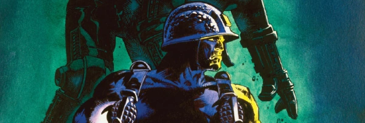

A long-running interview series.
Art by Cam Kennedy
| ++2004++ | |||||||||
| Article Title | Parts | Pages | w indicates a wraparound coverCovers | Year(s) | Issues | Writer | Artist | Colourist | Letterer |
|---|---|---|---|---|---|---|---|---|---|
| John Burns: Veteran | 1 | 6 | 0 | 2004 | M224 | David Bishop | Reprints.John Burns | <-- | n/a |
| Robin Smith: Spray That Again?... | 2 | 12 | 0 | 2004 | M225-226 | David Bishop | Reprints.Robin Smith | <-- | n/a |
| Colin MacNeil: Flying High... | 2 | 11 | 0 | 2004-2005 | M227-228 | David Bishop | Reprints.Colin MacNeil | <-- | n/a |
| ++2005++ | |||||||||
| Cam Kennedy: We Want You as a New Recruit... | 3 | 16 | 0 | 2005 | M229-231 | David Bishop | Reprints.Cam Kennedy | <-- | n/a |
| Bryan Talbot [1]: It's Good to Torque | 1 | 5 | 0 | 2005 | M232 | Joel Meadows | Reprints.Bryan Talbot | <-- | n/a |
| Robbie Morrison: The Slings and Arrows... | 3 | 16 | 0 | 2005 | M234-236 | David Bishop | reprints | <-- | n/a |
| Brian Bolland: Who Rules the Roost? | 2 | 14 | 0 | 2005-2006 | M240-241 | Joel Meadows | Reprints.Brian Bolland | <-- | n/a |
| Brian Bolland Errata | 1 | 0.5 | 0 | 2006 | M242 | Joel Meadows | n/a | [monochrome] | n/a |
| ++2006++ | |||||||||
| Mark Harrison: Forever in Electric Dreams | 1 | 7 | 0 | 2006 | M243 | David Bishop | Reprints.Mark Harrison | <-- | n/a |
| Grant Morrison [1]: Pop-Culture Prophet | 1 | 7 | 0 | 2006 | M245 | Matthew Badham | reprints | <-- | n/a |
| Alan Moore: Man on the Outside | 1 | 7 | 0 | 2006 | M246 | Michael Molcher | reprints | <-- | n/a |
| Ian Edginton: Pipe-and-Slippers Gothic | 1 | 7 | 0 | 2006 | M247 | Matthew Badham | reprints | <-- | n/a |
| Kevin O'Neill: His Dark Materials | 1 | 7 | 0 | 2006 | M248 | Michael Molcher | Reprints.Kevin O'Neill | <-- | n/a |
| Liam Sharp [1]: Critical Mass | 1 | 3 | 0 | 2006 | M248 | Michael Molcher | Reprints.Liam Sharp | <-- | n/a |
| D'Israeli [1]: Odd Man Out | 1 | 7 | 0 | 2006 | M251 | Matthew Badham | Reprints.D'Israeli | <-- | n/a |
| Paul Gravett: Culture Shock | 1 | 2 | 0 | 2006 | M251 | Chrissie Harper | reprints | <-- | n/a |
| Mike Collins: Relative Dimensions | 1 | 2 | 0 | 2006 | M253 | Edward Berridge | Reprints.Mike Collins | <-- | n/a |
| ++2007++ | |||||||||
| Dan Abnett: The Write Stuff | 1 | 7 | 0 | 2007 | M254 | Matthew Badham | reprints | <-- | n/a |
| Mike Mignola | 1 | 1 | 0 | 2007 | M256 | Alec Worley | Cover. Hellboy: Sword of Storms | <-- | n/a |
| Bryan Talbot [2]: Chasing Rabbits | 1 | 2 | 0 | 2007 | M257 | Alec Worley | Reprints.Alice in Sunderland | <-- | n/a |
| Steve Yeowell: The Art of Storytelling | 1 | 7 | 0 | 2007 | M257 | Matthew Badham | Reprints.Steve Yeowell | <-- | n/a |
| Henry Flint [1]: The Absolute Beginner | 1 | 7 | 0 | 2007 | M258 | Matthew Badham | Reprints.Henry Flint [reprints] | <-- | n/a |
| Paul Cornell [1]: In Geek Heaven | 1 | 2 | 0 | 2007 | M258 | Matthew Badham | promo images | <-- | n/a |
| Carl Critchlow: The Conan Doyle of Comics | 1 | 2 | 0 | 2007 | M260 | Matthew Badham | Reprints.Carl Critchlow | <-- | n/a |
| Simon Spurrier [1]: Young Guns (Go For It) | 1 | 7 | 0 | 2007 | M263 | Michael Molcher | reprints | <-- | n/a |
| John Hicklenton: The Art of Darkness | 1 | 7 | 0 | 2007 | M264 | Michael Molcher | Reprints.John Hicklenton | <-- | n/a |
| PJ Holden [1]: Tharg's Astronaut | 1 | 2 | 0 | 2007 | M265 | Matthew Badham | Reprints.PJ Holden | <-- | n/a |
| Simon Davis: Thinking Outside the Paintbox | 1 | 7 | 0 | 2007 | M265 | Michael Molcher | Reprints.Simon Davis | <-- | n/a |
| Alan Grant: The Dundee Connection... | 3 | 21 | 0 | 2007-2008 | M266-268 | David Bishop | reprints | <-- | n/a |
| ++2008++ | |||||||||
| Al Ewing [1]: Kill Your Own | 1 | 4 | 0 | 2008 | M267 | Matthew Badham | reprints / promos | <-- | n/a |
| Paul Grist: The Idiot's Guide to Self-Publishing | 1 | 2 | 0 | 2008 | M268 | Matthew Badham | reprints / promos | <-- | n/a |
| John McCrea: If the Beano Did Ultra-Violence | 1 | 7 | 0 | 2008 | M269 | Matthew Badham | reprints / promos | <-- | n/a |
| Dave Taylor: The Long and Winding Road | 1 | 7 | 0 | 2008 | M270 | Michael Molcher | reprints / promos | <-- | n/a |
| Rob Williams [1]: No More Heroes | 1 | 7 | 0 | 2008 | M271 | Matthew Badham | reprints / promos | <-- | n/a |
| Neil Marshall: Keeping it Real | 1 | 3 | 0 | 2008 | M271 | Alec Worley | reprints / promos | <-- | n/a |
| Frazer Irving: Brave New World | 1 | 7 | 0 | 2008 | M272 | Michael Molcher | reprints / promos | <-- | n/a |
| Peter Doherty: The Boy Done Good | 1 | 7 | 0 | 2008 | M273 | Michael Molcher | reprints / promos | <-- | n/a |
Linked to Droid LifeCat Sullivan: This Droid's Life | 1 | 2 | 0 | 2008 | M273 | Matthew Badham | reprints / promos | <-- | n/a |
| Jock: Most Wanted | 1 | 7 | 0 | 2008 | M274 | Michael Molcher | reprints / promos | <-- | n/a |
| Rufus Dayglo: The Illustrated Man | 1 | 3 | 0 | 2008 | M275 | Matthew Badham | reprints / promos | <-- | n/a |
| Alan Martin: Reforming the Band | 1 | 3 | 0 | 2008 | M275 | Matthew Badham | reprints / promos | <-- | n/a |
| Steve Roberts: Original Pirate Material | 1 | 3 | 0 | 2008 | M278 | Matthew Badham | reprints / promos | <-- | n/a |
| Greg Staples: A Brush With Greatness | 1 | 7 | 0 | 2008 | M279 | Michael Molcher | reprints / promos | <-- | n/a |
| ++2009++ | |||||||||
| Anthony Williams: The Comic Stripper Bares All | 1 | 7 | 0 | 2009 | M280 | Matthew Badham | reprints / promos | <-- | n/a |
| Tony Lee: The Great Escapist | 1 | 3 | 0 | 2009 | M280 | Matthew Badham | reprints / promos | <-- | n/a |
| John Higgins [1]: Anatomy of an Artist | 1 | 7 | 0 | 2009 | M281 | Michael Molcher | reprints / promos | <-- | n/a |
| Andy Diggle: Tharg's Head Revisited | 1 | 3 | 0 | 2009 | M281 | Matthew Badham | reprints / promos | <-- | n/a |
| Frank Quitely: Speaking Frankly | 1 | 7 | 0 | 2009 | M282 | Joel Meadows | reprints / promos | <-- | n/a |
Linked to The 86ersArthur Wyatt [1]: Final Flight | 1 | 3 | 0 | 2009 | M282 | Michael Molcher | reprints / promos | <-- | n/a |
| Charlie Adlard: Drawn of the Dead | 1 | 7 | 0 | 2009 | M283 | Matthew Badham | reprints / promos | <-- | n/a |
Full title: "Leah Moore [1] & John Reppion [1]: The Writer With Two Brains".Leah Moore [1] & John Reppion [1] | 1 | 3 | 0 | 2009 | M283 | Matthew Badham | reprints / promos | <-- | n/a |
| Colin Wilson: Crossing Borders | 1 | 7 | 0 | 2009 | M284 | Michael Molcher | reprints / promos | <-- | n/a |
| Richard Elson: Developing Worlds | 1 | 7 | 0 | 2009 | M285 | Michael Molcher | reprints / promos | <-- | n/a |
Linked to ArmitageDave Stone: Armitage and the Man | 1 | 3 | 0 | 2009 | M285 | Matthew Badham | reprints / promos | <-- | n/a |
| John Cooper: Last of the Tough Guys | 1 | 7 | 0 | 2009 | M286 | Michael Molcher | reprints / promos | <-- | n/a |
| Clive Barker: Still Raising Hell | 1 | 4 | 0 | 2009 | M286 | Calum Waddell | reprints / promos | <-- | n/a |
| Glenn Fabry: Keeping it Real | 1 | 7 | 0 | 2009 | M287 | Matthew Badham | reprints / promos | <-- | n/a |
| Ron Smith: Brush Strokes of Genius... | 2 | 14 | 0 | 2009 | M288-289 | Michael Molcher | reprints / promos | <-- | n/a |
| [Dario Argento]: Dark Dreams | 1 | 2 | 0 | 2009 | M289 | Calum Waddell | reprints / promos | <-- | n/a |
Full title: "Brendan McCarthy: The Strange Days of Brendan McCarthys".Brendan McCarthy | 1 | 7 | 0 | 2009 | M290 | Matthew Badham | reprints / promos | <-- | n/a |
| Kev Walker: Of 'Bots & Bond | 1 | 3 | 0 | 2009 | M290 | David Baillie | reprints / promos | <-- | n/a |
| David Millgate: The Punk Who Loved Prog | 1 | 2 | 0 | 2009 | M291 | Matthew Badham | reprints / promos | <-- | n/a |
| John Ridgway: Engineer of the Future | 1 | 7 | 0 | 2009 | M292 | Matthew Badham | reprints / promos | <-- | n/a |
| Neil Gaiman: A Graveyard of Dreams | 1 | 3 | 0 | 2009 | M292 | Calum Waddell | reprints / promos | <-- | n/a |
| ++2010++ | |||||||||
| Mike Carey [1]: The Devil's Advocate | 1 | 7 | 0 | 2010 | M293 | Joel Meadows | reprints / promos | <-- | n/a |
| George Romero | 1 | 1 | 0 | 2010 | M293 | unknown | reprints / promos | <-- | n/a |
| James Cameron | 1 | 1 | 0 | 2010 | M293 | unknown | reprints / promos | <-- | n/a |
| Sean Phillips: Confessions of a Marvel Zombie | 1 | 7 | 0 | 2010 | M294 | Matthew Badham | reprints / promos | <-- | n/a |
| Jon Davis-Hunt: The Martial Artist | 1 | 2 | 0 | 2010 | M294 | Matthew Badham | reprints / promos | <-- | n/a |
| Dom Reardon: Me and My Shadows | 1 | 7 | 0 | 2010 | M295 | Michael Molcher | reprints / promos | <-- | n/a |
| Pat Mills: Rooting for the Bad Guy | 1 | 2 | 0 | 2010 | M295 | Matthew Badham | reprints / promos | <-- | n/a |
| Jesus Redondo: Days of Wine & Warlocks | 1 | 7 | 0 | 2010 | M296 | Michael Molcher | reprints / promos | <-- | n/a |
| Kek-W: The Ghost in the Machine | 1 | 2 | 0 | 2010 | M296 | Matthew Badham | reprints / promos | <-- | n/a |
| Dave Gibbons: The Storyteller's Apprentice... | 2 | 14 | 0 | 2010 | M297-298 | Michael Molcher | reprints / promos | <-- | n/a |
| Siku: The Myth Maker | 1 | 7 | 0 | 2010 | M299 | Matthew Badham | reprints / promos | <-- | n/a |
| Antony Johnston: Where the Creator is King | 1 | 2 | 0 | 2010 | M299 | Matthew Badham | reprints / promos | <-- | n/a |
| Carlos Ezquerra: Son of the Man... | 3 | 22 | 0 | 2010 | M300-302 | Michael Molcher | reprints / promos | <-- | n/a |
| Boo Cook: A Bootiful Mind | 1 | 4 | 0 | 2010 | M300 | Matthew Badham | reprints / promos | <-- | n/a |
| Futurama: Back to the Futurama | 1 | 3 | 0 | 2010 | M301 | Joel Meadows | reprints / promos | <-- | n/a |
| Tom Savini: Tom of the Dead | 1 | 3 | 0 | 2010 | M302 | Calum Waddell | reprints / promos | <-- | n/a |
| Ronald D Moore: Cylon Night | 1 | 4 | 0 | 2010 | M302 | Joel Meadows Barry Renshawvarious | reprints / promos | <-- | n/a |
| Arthur Ranson: Just a Witness | 1 | 7 | 0 | 2010 | M303 | Matthew Badham | reprints / promos | <-- | n/a |
| Leigh Gallagher: Dead on Target | 1 | 4 | 0 | 2010 | Reprints: M413 (supplement, partial: 3pp)M303 | Matthew Badham | Reprints. Leigh Gallagher | <-- | n/a |
| Simon Fraser: Youth in Revolt | 1 | 7 | 0 | 2010 | M304 | Michael Molcher | reprints / promos | <-- | n/a |
| Liam Sharp [2]: The Body Eclectic | 1 | 7 | 0 | 2010 | M305 | Michael Molcher | reprints / promos | <-- | n/a |
| ++2011++ | |||||||||
| David Lloyd: V is for Verisimilitude | 1 | 7 | 0 | 2011 | M306 | Matthew Badham | reprints / promos | <-- | n/a |
| Eli Roth: Death, Destruction and Demonic Possession | 1 | 3 | 0 | 2011 | M306 | Calum Waddell | reprints / promos | <-- | n/a |
| Tobe Hooper: Master of Mayhem | 1 | 3 | 0 | 2011 | M306 | Calum Waddell | reprints / promos | <-- | n/a |
| Peter Hogan: Hogan's Heroes | 1 | 7 | 0 | 2011 | M307 | Matthew Badham | reprints / promos | <-- | n/a |
| Richard Starkings: The Elephants in the Room | 1 | 3 | 0 | 2011 | M307 | Matthew Badham | reprints / promos | <-- | n/a |
| Shaky Kane: A Space Oddity | 1 | 7 | 0 | 2011 | M308 | Michael Molcher | reprints / promos | <-- | n/a |
Linked to Number CruncherSimon Spurrier [2] & PJ Holden [2]: Crunch Time | 1 | 3 | 0 | 2011 | M308 | Matthew Badham | reprints / promos | <-- | n/a |
| Tim Bradstreet: Covering Fire | 1 | 4 | 0 | 2011 | M308 | Joel Meadows | reprints / promos | <-- | n/a |
| Lawrence Campbell: Earning Your Stripes | 1 | 7 | 0 | 2011 | M309 | Michael Molcher | reprints / promos | <-- | n/a |
| Nigel Dobbyn: Making Plans for Nigel | 1 | 7 | 0 | 2011 | M310 | Matthew Badham | reprints / promos | <-- | n/a |
| Steve Dillon: Pure Genius | 1 | 7 | 0 | 2011 | M311 | Joel Meadows | reprints / promos | <-- | n/a |
| D'Israeli [2]: The Future Is Now | 1 | 4 | 0 | 2011 | M311 | Matthew Badham | reprints / promos | <-- | n/a |
| Arthur Wyatt [2]: Weird Tales | 1 | 3 | 0 | 2011 | M311 | Matthew Badham | reprints / promos | <-- | n/a |
| John Tomlinson: The Art of Comic-Strip Maintenance | 1 | 7 | 0 | 2011 | M312 | Matthew Badham | reprints / promos | <-- | n/a |
| Ed Brubaker: Heroic Behavior | 1 | 4 | 0 | 2011 | M312 | Joel Meadows | reprints / promos | <-- | n/a |
| Brett Ewins: In Good Company | 1 | 7 | 0 | 2011 | M313 | Michael Molcher | reprints / promos | <-- | n/a |
| James Gunn: Hero of the Hour | 1 | 3 | 0 | 2011 | M313 | Calum Waddell | reprints / promos | <-- | n/a |
| Brian Azzarello: Hard Written | 1 | 4 | 0 | 2011 | M314 | Joel Meadows | reprints / promos | <-- | n/a |
| Duncan Fegredo: The Colour and the Shape | 1 | 7 | 0 | 2011 | M315 | Matthew Badham | reprints / promos | <-- | n/a |
| Staz Johnson: Rogue Artist | 1 | 3 | 0 | 2011 | M315 | Matthew Badham | reprints / promos | <-- | n/a |
| Jim McCarthy: The Rock n' Roller | 1 | 7 | 0 | 2011 | M317 | Michael Molcher | reprints / promos | <-- | n/a |
| Grant Morrison [2]: The Gods Must Be Crazy… | 1 | 6 | 0 | 2011 | M318 | Calum Waddell | reprints / promos | <-- | n/a |
| ++2012++ | |||||||||
| Simon Jacob: Making Cheap Movies | 1 | 7 | 0 | 2012 | M319 | Matthew Badham | reprints / promos | <-- | n/a |
| Mick Austin: The Fine Art of Comics | 1 | 7 | 0 | 2012 | M320 | Matthew Badham | reprints / promos | <-- | n/a |
| Edmund Bagwell: In Court to the King | 1 | 4 | 0 | 2012 | M321 | Matthew Badham | reprints / promos | <-- | n/a |
| Tiernen Trevallion: Tiernen's Toys | 1 | 3 | 0 | 2012 | M321 | Matthew Badham | reprints / promos | <-- | n/a |
| Steve Parkhouse: A Bigger World | 1 | 7 | 0 | 2012 | M322 | Matthew Badham | reprints / promos | <-- | n/a |
| Mark Millar: A World of His Own | 1 | 4 | 0 | 2012 | M323 | Calum Waddell | reprints / promos | <-- | n/a |
| Bryan Hitch: The Power & The Glory | 1 | 3 | 0 | 2012 | M323 | Calum Waddell | reprints / promos | <-- | n/a |
| Alec Worley: Adventures in the Comics Trade | 1 | 2 | 0 | 2012 | M323 | Ken Harrison | reprints / promos | <-- | n/a |
| Steve Pugh: Weird Tales | 1 | 7 | 0 | 2012 | M324 | Ken Harrison | reprints / promos | <-- | n/a |
| Chris Weston: Under the Influence... | 2 | 14 | 0 | 2012 | M325-236 | Michael Molcher | reprints / promos | <-- | n/a |
| David Hine: Notes From the Underground | 1 | 3 | 0 | 2012 | M325 | Ken Harrison | reprints / promos | <-- | n/a |
| Chris Burnham [1]: Filling the Bat Boots | 1 | 2 | 0 | 2012 | M326 | Joel Meadows | reprints / promos | <-- | n/a |
| Dylan Teague: All in the Timing | 1 | 7 | 0 | 2012 | M327 | Michael Molcher | reprints / promos | <-- | n/a |
| Barry Kitson: American Idols | 1 | 3 | 0 | 2012 | M327 | Joel Meadows | reprints / promos | <-- | n/a |
| Simon Coleby: Heavy Metal Hero | 1 | 7 | 0 | 2012 | M328 | Ken Harrison | reprints / promos | <-- | n/a |
| Karl Urban: Doing Dredd Justice | 1 | 3 | 0 | 2012 | M328 | Michael Molcher | reprints / promos | <-- | n/a |
| Alex Garland: Writer's Mega-Block | 1 | 3 | 0 | 2012 | M328 | Michael Molcher | reprints / promos | <-- | n/a |
| Neil Googe: Designing a Revolution | 1 | 7 | 0 | 2012 | M330 | Michael Molcher | reprints / promos | <-- | n/a |
| Michael Carroll [1]: Harsh Judgement | 1 | 3 | 0 | 2012 | M331 | Ken Harrison | reprints / promos | <-- | n/a |
| Annie Parkhouse: Lady of Letters | 1 | 3 | 0 | 2012 | M331 | Alex Fitch | reprints / promos | <-- | n/a |
| INJ Culbard [1]: Euro Smash | 1 | 2 | 0 | 2012 | M331 | Ken Harrison | reprints / promos | <-- | n/a |
| ++2013++ | |||||||||
| David Roach: Magnificent Obsession | 1 | 7 | 0 | 2013 | M332 | Michael Molcher | reprints / promos | <-- | n/a |
| Karl Richardson: The Art of War | 1 | 3 | 0 | 2013 | M333 | Ken Harrison | reprints / promos | <-- | n/a |
| Warren Pleece: On the Edge | 1 | 3 | 0 | 2013 | M334 | Ken Harrison | reprints / promos | <-- | n/a |
| Steve Niles: 30 Days of Niles | 1 | 3 | 0 | 2013 | M334 | Calum Waddell | reprints / promos | <-- | n/a |
| Paul Marshall: What Dreams May Come | 1 | 7 | 0 | 2013 | M335 | Ken Harrison | reprints / promos | <-- | n/a |
| Ben Willsher: The Accidental Artist | 1 | 7 | 0 | 2013 | M336 | Ken Harrison | reprints / promos | <-- | n/a |
| Mark Hamill: Feeling the Force | 1 | 3 | 0 | 2013 | M336 | Calum Waddell | reprints / promos | <-- | n/a |
| Inaki Miranda: Cultural Exchange | 1 | 3 | 0 | 2013 | M337 | David Baillie | reprints / promos | <-- | n/a |
| Rian Hughes: The Art of Ideas | 1 | 3 | 0 | 2013 | M337 | Ken Harrison | reprints / promos | <-- | n/a |
| Tom Eglington: Through the Thrill-Door | 1 | 3 | 0 | 2013 | M338 | Michael Molcher | reprints / promos | <-- | n/a |
| Lee Garbett | 1 | 3 | 0 | 2013 | M338 | Ken Harrison | reprints / promos | <-- | n/a |
| Steve Bissette: Breaking Boundaries | 1 | 4 | 0 | 2013 | M339 | Alex Fitch | reprints / promos | <-- | n/a |
| Gordon Rennie: Past Imperfect | 1 | 7 | 0 | 2013 | M340 | Michael Molcher | reprints / promos | <-- | n/a |
| Patrick Goddard: Savage Storytelling | 1 | 3 | 0 | 2013 | M341 | David Baillie | reprints / promos | <-- | n/a |
| Will Simpson: Ascending the Throne | 1 | 7 | 0 | 2013 | M342 | Michael Molcher | reprints / promos | <-- | n/a |
| Warwick Johnson Cadwell: The Anarch-Tist | 1 | 3 | 0 | 2013 | M342 | Matthew Badham | reprints / promos | <-- | n/a |
| Simon Harrison: Art & Soul | 1 | 7 | 0 | 2013 | M343 | Matthew Badham | reprints / promos | <-- | n/a |
| Guy Davis: Of Men & Monsters | 1 | 3 | 0 | 2013 | M343 | Barry Renshaw | reprints / promos | <-- | n/a |
| ++2014++ | |||||||||
| Garry Brown: Talent School | 1 | 3 | 0 | 2014 | M344 | Barry Renshaw | reprints / promos | <-- | n/a |
| David Baillie: Space Craft | 1 | 3 | 0 | 2014 | M344 | Matthew Badham | reprints / promos | <-- | n/a |
| Peter Milligan: Identity Crisis | 1 | 7 | 0 | 2014 | M346 | Karl Stock | reprints / promos | <-- | n/a |
| Emma Beeby: Judgement Dame | 1 | 3 | 0 | 2014 | M346 | Karl Stock | reprints / promos | <-- | n/a |
| Hilary Robinson: Breaking in the Boys | 1 | 3 | 0 | 2014 | M346 | Karl Stock | reprints / promos | <-- | n/a |
| Mike Dowling: Grounded in Reality | 1 | 3 | 0 | 2014 | M347 | Matthew Badham | reprints / promos | <-- | n/a |
| Declan Shalvey: Movin' On Up | 1 | 3 | 0 | 2014 | M347 | Karl Stock | reprints / promos | <-- | n/a |
| Mark Buckingham: Learning to Fly | 1 | 7 | 0 | 2014 | M348 | Matthew Badham | reprints / promos | <-- | n/a |
| David Pugh: To the Worlds Beyond | 1 | 7 | 0 | 2014 | M349 | Matthew Badham | reprints / promos | <-- | n/a |
| Nick Percival: Famous Monsters | 1 | 4 | 0 | 2014 | M349 | Karl Stock | reprints / promos | <-- | n/a |
| Vince Locke: The Art of Violence | 1 | 4 | 0 | 2014 | M349 | Karl Stock | reprints / promos | <-- | n/a |
| Trevor Hairsine: A Design for Life | 1 | 7 | 0 | 2014 | M350 | Matthew Badham | reprints / promos | <-- | n/a |
| Kev Hopgood: Machine Man | 1 | 4 | 0 | 2014 | M350 | Matthew Badham | reprints / promos | <-- | n/a |
| Leah Moore [2] & John Reppion [2]: Killer Combo | 1 | 3 | 0 | 2014 | M350 | Karl Stock | reprints / promos | <-- | n/a |
| Guy Adams: Casting for Type | 1 | 7 | 0 | 2014 | M351 | Karl Stock | reprints / promos | <-- | n/a |
| Neil Roberts: Shooting for the Stars | 1 | 4 | 0 | 2014 | M351 | Matthew Badham | reprints / promos | <-- | n/a |
| John Layman: Chewing the Fat | 1 | 4 | 0 | 2014 | M352 | Alex Fitch | reprints / promos | <-- | n/a |
| Eddie Robson: Script Doctoring | 1 | 3 | 0 | 2014 | M352 | Karl Stock | reprints / promos | <-- | n/a |
| Phil Winslade: Black and White and Read All Over | 1 | 7 | 0 | 2014 | M353 | Matthew Badham | reprints / promos | <-- | n/a |
| Lee Carter: Prime Directives | 1 | 4 | 0 | 2014 | M353 | Karl Stock | reprints / promos | <-- | n/a |
| Jake Lynch [1] / Eoin Coveney: The Prog Slog | 1 | 3 | 0 | 2014 | M353 | Karl Stock | reprints / promos | <-- | n/a |
| Paul Davidson: Creative Differences | 1 | 7 | 0 | 2014 | M354 | Matthew Badham | reprints / promos | <-- | n/a |
| Arthur Wyatt [3]: Dredd Intent | 1 | 4 | 0 | 2014 | M354 | Matthew Badham | reprints / promos | <-- | n/a |
| Si Spencer: Peripheral Visions | 1 | 7 | 0 | 2014 | M355 | Matthew Badham | reprints / promos | <-- | n/a |
| ++2015++ | |||||||||
| Roger Langridge [1]: Stories From the Top of the Stairs | 1 | 7 | 0 | 2015 | M357 | Matthew Badham | reprints / promos | <-- | n/a |
| Paul Johnson: Thinking Outside the Paintbox | 1 | 7 | 0 | 2015 | M358 | Karl Stock | reprints / promos | <-- | n/a |
| Smudge: The Missing Ink | 1 | 7 | 0 | 2015 | M359 | Karl Stock | reprints / promos | <-- | n/a |
| Andrew Currie: Voices Off | 1 | 7 | 0 | 2015 | M360 | Karl Stock | reprints / promos | <-- | n/a |
| Alex Ronald: No Limits | 1 | 7 | 0 | 2015 | M361 | Matthew Badham | reprints / promos | <-- | n/a |
| Jeff Anderson: Keeping the Faith | 1 | 7 | 0 | 2015 | M362 | Matthew Badham | reprints / promos | <-- | n/a |
| Paul Cornell [2]: Script Doctor | 1 | 4 | 0 | 2015 | M363 | Stephen Jewell | reprints / promos | <-- | n/a |
| Nick Abadzis: All of Time and Space | 1 | 3 | 0 | 2015 | M363 | Matthew Badham | reprints / promos | <-- | n/a |
| Scott McCloud: The Art of Comics | 1 | 4 | 0 | 2015 | M364 | Stephen Jewell | reprints / promos | <-- | n/a |
| Dave Kendall: Dream Warrior | 1 | 3 | 0 | 2015 | M364 | Karl Stock | reprints / promos | <-- | n/a |
| Mike Carey [2]: Long Road to Ruin | 1 | 3 | 0 | 2015 | M366 | Stephen Jewell | reprints / promos | <-- | n/a |
| Ian Kennedy: A Masterclass in Mechanics | 1 | 7 | 0 | 2015 | M367 | Karl Stock | reprints / promos | <-- | n/a |
| ++2016++ | |||||||||
| Mark Sexton: Mad About the Boy | 1 | 4 | 0 | 2016 | M368 | Matthew Badham | Mark Sexton | <-- | n/a |
| Darren Douglas: Graphic Nature | 1 | 4 | 0 | 2016 | M368 | Karl Stock | Darren Douglas | <-- | n/a |
| Dan McDaid: The Zero Option | 1 | 4 | 0 | 2016 | M369 | Matthew Badham | Dan McDaid | <-- | n/a |
Linked to Realm of the DamnedAlec Worley [2] & Pye Parr: Monsters of Rock | 1 | 4 | 0 | 2016 | M369 | Matthew Badham | Pye Parr | <-- | n/a |
| Al Ewing [2]: An Englishman in New York | 1 | 3 | 0 | 2016 | M369 | Stephen Jewell | reprints | <-- | n/a |
| James Robinson: Stars & Stripes | 1 | 7 | 0 | 2016 | M372 | Karl Stock | reprints | <-- | n/a |
| Joe Hill: A Walk on the Darkside | 1 | 4 | 0 | 2016 | M374 | Stephen Jewell | reprints | <-- | n/a |
| Ryan Brown: Better Than Life | 1 | 3 | 0 | 2016 | M375 | Karl Stock | Ryan Brown | <-- | n/a |
| Ulises Farinas & Erick Freitas: The Other Side of the Law | 1 | 4 | 0 | 2016 | M377 | Matthew Badham | reprints | <-- | n/a |
| Tom Foster: It's the Thought That Counts | 1 | 4 | 0 | 2016 | M377 | Karl Stock | Tom Foster | <-- | n/a |
| Glyn Dillon: Adventures in the Screen Trade | 1 | 7 | 0 | 2016 | M378 | Stephen Jewell | reprints | <-- | n/a |
| ++2017++ | |||||||||
| David Hitchcock: The Gothic Period | 1 | 4 | 0 | 2017 | M380 | Karl Stock | David Hitchcock | [greyscale] | n/a |
| Lauren Beukes & Dale Halvorsen: In the Blood | 1 | 4 | 0 | 2017 | M381 | Karl Stock | reprints | <-- | n/a |
| Adrian Salmon: Styling it Out | 1 | 4 | 0 | 2017 | M381 | Karl Stock | Adrian Salmon | <-- | n/a |
| Kim Raymond: Of Mice and Lawmen | 1 | 7 | 0 | 2017 | M382 | Karl Stock | Kim Raymond | <-- | n/a |
| Ben Wheatley: Under the Influence | 1 | 4 | 0 | 2017 | M382 | Karl Stock | publicity stills | <-- | n/a |
| Dermot Power: The Power of the Force | 1 | 7 | 0 | 2017 | M383 | Stephen Jewell | Dermot Power | <-- | n/a |
Full title: "David Aja, Alex de Campi & Kei Zama: Tuning in to the Global Frequency".David Aja, Alex de Campi & Kei Zama | 1 | 3 | 0 | 2017 | M383 | Karl Stock | reprints | <-- | n/a |
| Chris Lowder: In Case of Emergency: Break Heads | 1 | 7 | 0 | 2017 | M384 | Stephen Jewell | reprints | <-- | n/a |
| Rory McConville: The Choice of the New Generation | 1 | 3 | 0 | 2017 | M384 | Karl Stock | reprints | <-- | n/a |
| Frank Quitely: In the Frame | 1 | 1.5 | 0 | 2017 | M384 | Scott Montgomery | publicity stills | <-- | n/a |
| Dean Ormston: Under the Hammer | 1 | 4 | 0 | 2017 | M386 | Stephen Jewell | reprints | <-- | n/a |
| John Stokes: After the Fox | 1 | 5 | 0 | 2017 | M387 | Karl Stock | reprints | <-- | n/a |
| Liam Sharp [3]: Worlds of Wonder | 1 | 3 | 0 | 2017 | M387 | Stephen Jewell | reprints | <-- | n/a |
| Simon Furman: Primal Scream | 1 | 3 | 0 | 2017 | M389 | Karl Stock | reprints | <-- | n/a |
| Leonardo Manco: Infernal Affairs | 1 | 2 | 0 | 2017 | M389 | Stephen Jewell | reprints | <-- | n/a |
| Mike Dorey: Taking it to the Edge | 1 | 4 | 0 | 2017 | M391 | Karl Stock | reprints | <-- | n/a |
| ++2018++ | |||||||||
| Duke Mighten: Fighting Spirit | 1 | 4 | 0 | 2018 | M392 | Karl Stock | reprints | <-- | n/a |
| New Creators 2018: Face the Future | 1 | 4 | 0 | 2018 | M393 | Karl Stock | reprints | <-- | n/a |
| Robert Bliss: The Clown Prince of Design | 1 | 3 | 0 | 2018 | M394 | Stephen Jewell | reprints | <-- | n/a |
| Nicolo Assirelli: Holding Out For an (Anti) Hero | 1 | 3 | 0 | 2018 | M397 | Matthew Badham | reprints | <-- | n/a |
| Barbara Nosenzo: Golden Halo | 1 | 1 | 0 | 2018 | M397 | Karl Stock | reprints | <-- | n/a |
| Alan Hebden: Running With the Pack | 1 | 7 | 0 | 2018 | M400 | Stephen Jewell | reprints | <-- | n/a |
| The Editor Interviews | |||||||||
| 1: Steve MacManus | 1 | 1 | 0 | 2018 | M400 | Karl Stock | reprints | <-- | n/a |
| 2: David Bishop | 1 | 1 | 0 | 2018 | M400 | Karl Stock | reprints | <-- | n/a |
| 3: John Tomlinson | 1 | 1 | 0 | 2018 | M400 | Karl Stock | reprints | <-- | n/a |
| 4: Andy Diggle | 1 | 1 | 0 | 2018 | M400 | Karl Stock | reprints | <-- | n/a |
| 5: Alan Barnes | 1 | 1 | 0 | 2018 | M400 | Karl Stock | reprints | <-- | n/a |
| Ian Gibson: Ace of Slades | 1 | 5 | 0 | 2018 | M400 | Matthew Badham | reprints | <-- | n/a |
Linked to Judge DreddRob Williams [2] & Henry Flint [2]: House Calls | 1 | 1 | 0 | 2018 | 2100 | Richard Burton | Henry Flint | <-- | n/a |
| Kelvin Gosnell: Taking Flight | 1 | 6 | 0 | 2018 | 2111 | Stephen Jewell | reprints | <-- | n/a |
| Richard Burton: At the Comics Coalface | 1 | 4 | 0 | 2018 | 2111 | Karl Stock | reprints | <-- | n/a |
| ++2019++ | |||||||||
| New Creators 2019: A Springboard to Droid Status | 1 | 4 | 0 | 2019 | M404 | Karl Stock | reprints | <-- | n/a |
| Paul Jenkins: Blazing a Trail | 1 | 3 | 0 | 2019 | M405 | Paul Jenkins | reprints | <-- | n/a |
| Dan Watters: The Devil is in the Details | 1 | 3 | 0 | 2019 | M406 | Stephen Jewell | reprints | <-- | n/a |
| Caspar Wijngaard: Having a (Cannon) Ball | 1 | 3 | 0 | 2019 | M406 | Stephen Jewell | reprints | <-- | n/a |
| Geoff Senior: The Great Transformation | 1 | 5 | 0 | 2019 | M408 | Karl Stock | reprints | <-- | n/a |
| Abigail Bulmer: Imagination Fuel | 1 | 3 | 0 | 2019 | M408 | Matthew Badham | reprints | <-- | n/a |
| Mike Perkins: Carving a Career | 1 | 3 | 0 | 2019 | M409 | Karl Stock | reprints | <-- | n/a |
| Aneke, Erica Schultz & Brian Corcoran: Drawn to the Prog | 1 | 2 | 0 | 2019 | M410 | Karl Stock | reprints | <-- | n/a |
| Maura McHugh: Entering the Psi of the Storm | 1 | 2 | 0 | 2019 | M410 | Karl Stock | reprints | <-- | n/a |
| Ollie Masters: Groove Is in the Heart | 1 | 3 | 0 | 2019 | M410 | Stephen Jewell | reprints | <-- | n/a |
| Nick Landau: From Tooth to Titan | 1 | 6 | 0 | 2019 | M411 | Stephen Jewell | reprints | <-- | n/a |
| Doug Braithwaite: Lockin' Down the House (of Ideas) | 1 | 2 | 0 | 2019 | M411 | Karl Stock | reprints | <-- | n/a |
| INJ Culbard [2]: Everything Counts | 1 | 2 | 0 | 2019 | M412 | Scott Montgomery | reprints | <-- | n/a |
| Stewart Kenneth Moore: Calling Action | 1 | 3 | 0 | 2019 | M413 | Karl Stock | reprints | <-- | n/a |
| Ales Kot: The Body Politic | 1 | 2 | 0 | 2019 | M415 | Karl Stock | reprints | <-- | n/a |
| ++2020++ | |||||||||
| Matt Soffe: The Colour Out of Space | 1 | 2 | 0 | 2020 | M416 | Karl Stock | reprints | <-- | n/a |
| Martin Simmonds: Die Laughing | 1 | 3 | 0 | 2020 | M417 | Stephen Jewell | reprints | <-- | n/a |
| Chris Wildgoose: Out of This World | 1 | 3 | 0 | 2020 | M419 | Stephen Jewell | reprints | <-- | n/a |
Linked to [Harry Heston]Jake Lynch [2]: Monkeying Around | 1 | 3 | 0 | 2020 | M420 | Barry Renshaw | reprints | <-- | n/a |
| Jason Kingsley: Rebel in Chief | 1 | 3 | 0 | 2020 | SFS25 | Karl Stock | reprints | <-- | n/a |
| Jimmy Broxton: Magic & Mystery | 1 | 4 | 0 | 2020 | M423 | Karl Stock | reprints | <-- | n/a |
| Dave Hunt: Marshalling the Battle | 1 | 6 | 0 | 2020 | M424 | Karl Stock | reprints | <-- | n/a |
| Mike Carroll [2] & John Higgins [2]: First Judgement | 1 | 2 | 0 | 2020 | M425 | Richard Bruton | reprints | <-- | n/a |
| Carlos Pino: Dispatches from the Front | 1 | 6 | 0 | 2020 | 2212 | Stephen Jewell | reprints | <-- | n/a |
| Wayne Reynolds: The Art of Play | 1 | 2 | 0 | 2020 | M427 | Matthew Badham | reprints | <-- | n/a |
| ++2021++ | |||||||||
| John Sanders: Man at the Top | 1 | 5 | 0 | 2021 | M428 | Stephen Jewell | reprints | <-- | n/a |
| Cavan Scott: A Wider World | 1 | 3 | 0 | 2021 | M432 | Barry Renshaw | reprints | <-- | n/a |
| Liam Johnson: Bursting Out of the Bubble | 1 | 3 | 0 | 2021 | M433 | Karl Stock | reprints | <-- | n/a |
| Roy Preston: Let's Get Quizzical | 1 | 6 | 0 | 2021 | M434 | Stephen Jewell | reprints | <-- | n/a |
| Ram V: Going Places | 1 | 3 | 0 | 2021 | M434 | Stephen Jewell | reprints | <-- | n/a |
| Steve Roberts [2]: Total Re-Kawl | 1 | 5 | 0 | 2021 | M435 | Karl Stock | reprints | <-- | n/a |
| Lee Sullivan: Franchise Fever | 1 | 4 | 0 | 2021 | M435 | editorial | reprints | <-- | n/a |
| Simon Geller: Hitting the Ground Running | 1 | 4 | 0 | 2021 | M436 | Karl Stock | reprints | <-- | n/a |
| Roger Langridge [2]: Opening Pandora's Box | 1 | 2 | 0 | 2021 | M437 | Karl Stock | reprints | <-- | n/a |
| Brett Parson: Name That 'Toon | 1 | 2 | 0 | 2021 | M437 | Karl Stock | reprints | <-- | n/a |
| Tom Paterson: The Goon Squad | 1 | 4 | 0 | 2021 | M438 | Stephen Jewell | reprints | <-- | n/a |
| Jamie Delano: Hell is for Heroes | 1 | 3 | 0 | 2021 | M438 | Karl Stock | reprints | <-- | n/a |
| Doug Church: The Vision Thing | 1 | 6 | 0 | 2021 | 2262 | Karl Stock | reprints | <-- | n/a |
| Colin Wyatt: Action Stations | 1 | 4 | 0 | 2021 | M439 | Karl Stock | reprints | <-- | n/a |
| ++2022++ | |||||||||
| Steve White: Sheer Dino-Mite! | 1 | 4 | 0 | 2022 | M440 | Karl Stock | reprints | <-- | n/a |
| David Barnett: A Kind of Magic | 1 | 1 | 0 | 2022 | M442 | Stephen Jewell | reprints | <-- | n/a |
| Trevor Metcalfe: The Latest Kraze | 1 | 3 | 0 | 2022 | M443 | Stephen Jewell | reprints | <-- | n/a |
| Tazio Bettin: No More Heroes | 1 | 2 | 0 | 2022 | M444 | Karl Stock | reprints | <-- | n/a |
| Andy Clarke: Confidence in the Line | 1 | 4 | 0 | 2022 | M446 | Karl Stock | reprints | <-- | n/a |
| Alan Langford: The Mane Attraction | 1 | 2 | 0 | 2022 | M446 | editorial | reprints | <-- | n/a |
| Chris Burnham [2]: From Bat to the Future | 1 | 2 | 0 | 2022 | M449 | Karl Stock | reprints | <-- | n/a |
| Gerry Finley-Day: Planes, Trains & Infantrymen | 1 | 4 | 0 | 2022 | M451 | Karl Stock | reprints | <-- | n/a |
| John Watson: Generational Shift | 1 | 4 | 0 | 2022 | M451 | Stephen Jewell | reprints | <-- | n/a |
| John Freeman: Mixing It Up | 1 | 3 | 0 | 2022 | M451 | Matt Badham | reprints | <-- | n/a |
| ++2023++ | |||||||||
| Honor Vincent: Remote Working | 1 | 4 | 0 | 2023 | M453 | Karl Stock | reprints | <-- | n/a |
| Douglas Wolk: California Dreaming | 1 | 4 | 0 | 2023 | M454 | Karl Stock | reprints | <-- | n/a |
| Rob Richardson: Waugh Stories | 1 | 4 | 0 | 2023 | M455 | Karl Stock | reprints | <-- | n/a |
| Rob Davis: Kitchen-Sink Constructs | 1 | 4 | 0 | 2023 | M457 | Stephen Jewell | reprints | <-- | n/a |
| Kieran McKeown: When Comics Come Calling | 1 | 3 | 0 | 2023 | M457 | Karl Stock | reprints | <-- | n/a |
| Aly Fell: A Magical Past | 1 | 2 | 0 | 2023 | M458 | Stephen Jewell | reprints | <-- | n/a |
| Conor Boyle: Changing Direction | 1 | 3 | 0 | 2023 | M458 | Karl Stock | reprints | <-- | n/a |
| Geoffrey D. Wessel: War Games | 1 | 3 | 0 | 2023 | M459 | Stephen Jewell | reprints | <-- | n/a |
| John Stones: That Inking Feeling | 1 | 7 | 0 | 2023 | M459 | Karl Stock | reprints | <-- | n/a |
| Steve Sampson: Cass on Demand | 1 | 6 | 0 | 2023 | M459 | Karl Stock | reprints | <-- | n/a |
| John Tomlinson [3]: A Doom With a View | 1 | 4 | 0 | 2023 | M461 | Stephen Jewell | reprints | <-- | n/a |
| Mike Collins [2]: Script Doctor | 1 | 5 | 0 | 2023 | M463 | Karl Stock | reprints | <-- | n/a |
| Gary Welsh: Graphic Scenes | 1 | 2 | 0 | 2023 | M463 | Karl Stock | reprints | <-- | n/a |
| Rufus Hound: Top Dog | 1 | 3 | 0 | 2023 | M463 | Karl Stock | reprints | <-- | n/a |
| ++2024++ | |||||||||
| Anthony Williams [2]: Comic-Shop Confidential | 1 | 4 | 0 | 2024 | M464 | Karl Stock | reprints | <-- | n/a |
| Lee Milmore: Wild Dreams | 1 | 2 | 0 | 2024 | M464 | Karl Stock | reprints | <-- | n/a |
| Luke Horsman: Bring the Eccentric | 1 | 2 | 0 | 2024 | M464 | Karl Stock | reprints | <-- | n/a |
| Mark Eyles: Wired to Thrill | 1 | 3 | 0 | 2024 | M465 | Karl Stock | reprints | <-- | n/a |
| David Michelinie: Rallying the Trooper | 1 | 2 | 0 | 2024 | M466 | Karl Stock | reprints | <-- | n/a |
| Igor Goldkind: The Medium is the Message | 1 | 3 | 0 | 2024 | M467 | Karl Stock | reprints | <-- | n/a |
| Steve Kyte: Thunder Struck | 1 | 4 | 0 | 2024 | M467 | Stephen Jewell | reprints | <-- | n/a |
| Ian Rimmer: Good and Ghastly | 1 | 2 | 0 | 2024 | M467 | Karl Stock | reprints | <-- | n/a |
| RM Guera & Giulia Brusco: The European School | 1 | 4 | 0 | 2024 | M468 | Karl Stock | reprints | <-- | n/a |
| Laura Helsby: Punk & Disorderly | 1 | 4 | 0 | 2024 | M468 | Karl Stock | reprints | <-- | n/a |
| Ned Hartley: Top Banana | 1 | 3 | 0 | 2024 | M470 | editorial | reprints | <-- | n/a |
| Mike Walters: On a High | 1 | 4 | 0 | 2024 | M470 | Karl Stock | reprints | <-- | n/a |
| year | episodes | pages |
| 2002 | 0 | 0 |
| 2003 | 0 | 0 |
| 2004 | 4 | 24 |
| 2005 | 9 | 49 |
| 2006 | 11 | 56.5 |
| 2007 | 12 | 58 |
| 2008 | 16 | 83 |
| 2009 | 22 | 113 |
| 2010 | 24 | 120 |
| 2011 | 22 | 113 |
| 2012 | 22 | 101 |
| 2013 | 18 | 79 |
| 2014 | 24 | 111 |
| 2015 | 12 | 66 |
| 2016 | 11 | 48 |
| 2017 | 16 | 65.5 |
| 2018 | 15 | 43 |
| 2019 | 15 | 46 |
| 2020 | 10 | 34 |
| 2021 | 14 | 54 |
| 2022 | 10 | 29 |
| 2023 | 14 | 54 |
| 2024 | 12 | 37 |
| 2025 | 0 | 0 |
| 2026 | 0 | 0 |